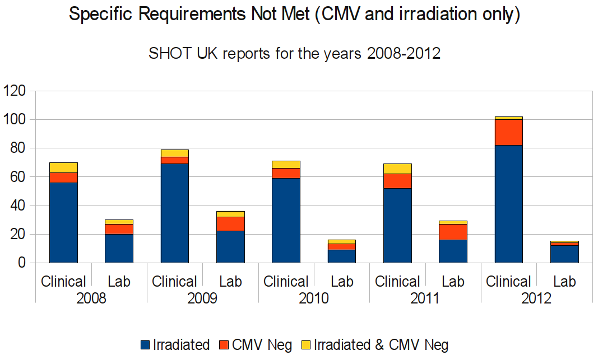

Alpha 0.1.1
Updated
5 Jan 2014
Special Blood Request aims to make it quick and easy to learn about, look up and test your knowledge of the indications for irradiated and cytomegalovirus (CMV) negative blood components. The app is designed for:
Press continue to show the terms of use.
ContinueTerms of use
Use of the app is subject to these terms. Please read them.
Yes, I agree to the termsSpecial Blood Request ("the app") was created during a PhD research project and is made available for evaluation use only. There may be inaccuracies in the content. The developers and contributors cannot be held liable for any harm resulting from the use of the app. The app is not intended to be a substitute for local hospital guidelines, professional medical advice, diagnosis, or treatment. Always seek the advice of a qualified health provider with any questions regarding medical matters.
The app is based on (but in no way endorsed by) the British Committee for Standards in Haematology (BCSH) 2010 guidelines on the irradation of blood components and the 2012 position statement on the use of CMV negative blood components by the Advisory Committee on the Safety of Blood, Tissues and Organs (SaBTO).
Recommendations for irradiated and CMV negative blood components is only displayed in the app when it is indicated or contraindicated in these national UK guidelines. Guidance may not be appropriate in all patient situations. Local hospital policies may differ.
The app is developed for a research project seeking to evaluate and improve the design of clinical apps. The use of the app is therefore monitored. We may publish our findings in scholarly publications, observing the usual academic principles of anonymity, informed consent and voluntary participation. The following data is recorded:
If you choose to provide additional feedback (using the 'leave feedback' button), we may correlate your browsing behaviour with your feedback answers to help us better understand the strengths and weaknesses of the app design. To do this we store a browser cookie on your device.
We do not collect any personally identifying information, unless you disclose this through the online feedback form.
THE SOFTWARE IS PROVIDED "AS IS", WITHOUT WARRANTY OF ANY KIND, EXPRESS OR IMPLIED, INCLUDING BUT NOT LIMITED TO THE WARRANTIES OF MERCHANTABILITY, FITNESS FOR A PARTICULAR PURPOSE AND NONINFRINGEMENT. IN NO EVENT SHALL THE AUTHORS OR COPYRIGHT HOLDERS BE LIABLE FOR ANY CLAIM, DAMAGES OR OTHER LIABILITY, WHETHER IN AN ACTION OF CONTRACT, TORT OR OTHERWISE, ARISING FROM, OUT OF OR IN CONNECTION WITH THE SOFTWARE OR THE USE OR OTHER DEALINGS IN THE SOFTWARE.
Yes, I agree to the termsPress a button.
Select a topic from the list or tap the button below to start from the beginning.
1.1 Patient safetyFailure to provide irradiated cellular blood components may expose at-risk patients to transfusion-associated Graft versus Host Disease TA-GvHD. This is a very rare, but life-threatening condition BCSH 2010, p.37.
Red cells and platelets supplied through the UK Blood Services are leucocyte depleted SaBTO 2012, p.1. However removal of leucocytes (white cells) is not a substitute for irradiation, which prevents TA-GvHD by inactivating residual donor lymphocytes BCSH 2010, p.49.
Although leucodepletion provides significant protection against cytomegalovirus (CMV) infection, cellular blood components should be provided as CMV negative to protect vulnerable patients against transfusion-transmitted CMV infection SaBTO 2012.
Almost three million blood components are issued annually in UK SHOT 2009, p.11. Of these, approximately 10% are irradiated SHOT 2010, p.129.
In the last five years, more than five hundred mistakes involving irradiated and CMV negative blood components were reported to the Serious Hazards of Transfusion (SHOT) UK haemovigilance scheme (Figure 1).
These were incidents where blood components failed to be provided as irradiated and/or CMV negative to at-risk patients according to guidelines.
Figure 1: Specific Requirements Not Met (SRNM) reports by year and source of error. Clinical errors include failure to communicate the need for special components to the lab. Lab errors are when the request was made but not acted upon SHOT 2010, p.27. SHOT data used with permission and provided courtesy of Dr. Paula Bolton-Maggs, Debbi Poles and Alison Watts.
There are many underlying reasons for why special requirements fail to be provided to at-risk patients, as these SHOT cases illustrate:
"The admitting doctor noted the past history of Hodgkin's disease but was not aware of the requirements for irradiated blood." SHOT 2011, p.26
"A request form for blood components for a patient with CLL on fludarabine was completed by a haematology nurse, and checked and signed by a junior doctor who also prescribed the components. The need for irradiated blood was not indicated on the request form or the prescription." SHOT 2008, p.46
"An elderly man was transfused 9 units of blood for chronic anaemia. Subsequently a haematology registrar found that he had been treated with cladarabine several years before." SHOT 2012, p.32
"A patient was transferred from his primary hospital, where he had undergone a stem-cell transplant, to another hospital within the same Trust in order to access an ITU bed. [...] Irradiated components were not requested due to a lack of communication between the clinicians, and the laboratory records were separate from those at the originating hospital." SHOT 2010, p.41
"No patient identification was taken to the blood fridge, and as a result the wrong unit of red cells was removed by a registered nurse and taken to the ward for an 81-year-old female patient with chronic lymphocytic leukaemia (CLL). On the ward another nurse administering the transfusion assumed that the checks had been completed, and because of this assumption no bedside checks were performed. The patient received non-irradiated group A D positive red cells, instead of irradiated O D positive red cells. The error was noticed when the patient asked whether the unit was irradiated. Consequently <50 mL was transfused." SHOT 2008, p.31
"A patient required irradiated blood because of previous chemotherapy. The transfusion laboratory had received notification of this special requirement and added the information to the LIMS. The special requirement flag was subsequently removed from the LIMS in error. From the time the flag was removed to the time it was discovered, the patient had received 15 units of red cells and 5 units of platelets that had not been irradiated." SHOT 2012, p.56
Press to expand list items.
SHOT has made several recommendations aimed at reducing mistakes. Some of these are to:
"All haematology units must devise specific educational programmes for all their staff members providing the rationale and indications for specialist components and this information should be accessible at the time of making the requests for blood components." SHOT 2011, p.28
"The importance of irradiation, and the rationale behind it should be emphasised during teaching of junior haematology and oncology doctors. This education is part of the curriculum for specialist trainees, but the junior pre-specialist doctors in these areas may remain ignorant despite being frequently called upon to order components." SHOT 2008, p.26
"Local mechanisms for ordering and prescribing components need to facilitate correct ordering, and remind clinical and laboratory personnel where possible" SHOT 2011, p.26
"Patients who require irradiated and other special products should be provided with an appropriate card [...] Patients with cards noting special requirements should be educated about their meaning and importance, in particular always to show these to clinical staff on admission to any hospital." SHOT 2012, p.34
"The final 'bedside' check is the last opportunity to ensure that the correct unit or component has been collected for the patient receiving the transfusion. Complete and thorough bedside checks involving one or two staff members must be completed independently and without interruption. " SHOT 2013, p.61
"Every person in the transfusion process must perform rigorous identity checks at each point and ensure that the component collected is the one prescribed. The use of a transfusion checklist is recommended." SHOT 2013, p.62
"Computer prompts/warnings/flags are a valuable tool for trying to prevent human error through 'slips'; but staff must also have the underpinning knowledge to understand and act appropriately to a warning." SHOT 2012, p.7
"The addition of these warnings/flags/notes is a manual procedure and is itself prone to error and should be controlled, for example, entered by one BMS and checked by a second." SHOT 2012, p.51
Press to expand list items.
For more details and recommendations, please refer to the latest SHOT report. SHOT 2013
Treleaven, J., Gennery, A., Marsh, J., Norfolk, D., Page, L., Parker, A., Saran, F., Thurston, J. and Webb, D. (2011), Guidelines on the use of irradiated blood components prepared by the British Committee for Standards in Haematology blood transfusion task force. British Journal of Haematology, 152: 35-51. doi: 10.1111/j.1365-2141.2010.08444.x
DBL McClelland (ed) (2007) Handbook of Transfusion Medicine, 4th Ed. Published in the UK by The Stationary Office.
Medical Subject Headings (2013) published by the U.S. National Library of Medicine, National Institutes of Health.
NHS National Genetics and Genomics Education Centre, glossary item "First-degree relative".
McClelland DBL, Pirie E, Franklin IM (2010) for the EU Optimal Use of Blood Project Partners. The Optimal Blood Use Manual. Published by Scottish National Blood Transfusion Service.
Advisory Committee on the Safety of Blood, Tissues and Organs (SaBTO) (2012) Position statement on cytomegalovirus tested blood components.
Taylor C, Cohen H, Jones H, et al (2008), on behalf of the Serious Hazards of Transfusion (SHOT) Steering Group. The 2007 Annual SHOT Report.
Taylor C (Ed.), Cohen H, Mold D, Jones H, et al (2009), on behalf of the Serious Hazards of Transfusion (SHOT) Steering Group. The 2008 Annual SHOT Report.
Taylor C (Ed.), Cohen H, Mold D, Jones H, et al (2010), on behalf of the Serious Hazards of Transfusion (SHOT) Steering Group. The 2009 Annual SHOT Report.
Bolton-Maggs, P (Ed) and Cohen, H (2012) on behalf of the Serious Hazards of Transfusion (SHOT) Steering Group. The 2011 Annual SHOT Report.
Bolton-Maggs P (Ed), Poles D, Watt A, Thomas D and Cohen H (2013) on behalf of the Serious Hazards of Transfusion (SHOT) Steering Group. The 2012 Annual SHOT Report.
Press to expand an entry. All documents open in a new window.
Please consult the list of indications to determine which patient groups are considered at risk of transfusion-associated Graft versus Host Disease (TA-GvHD) and transfusion-transmitted cytomegalovirus (CMV) infection.
Blood is separated into five components: red cells, platelets, white cells, fresh frozen plasma and cryoprecipitate HTM 2007, p. 1. These can be classified into cellular and non-cellular (plasma) components.
Platelets, red cells and white cells are cellular blood components that contain leucocytes (white cells).
Lymphocytes (a type of white cell) can cause TA-GvHD. Hence cellular blood components, even if leucodepleted, must be irradiated to deactivate any residual lymphocytes before transfusion to at-risk patients HTM 2007, p. 41.
The only exception to this rule is cryopreserved red cells after deglycerolization, because these are washed free of leucocytes BCSH 2010, p. 42.
Monocytes (another type of white cell) may carry latent cytomegalovirus (CMV). For this reason SaBTO recommend cellular blood components be provided leucodepleted and CMV negative to high risk patients SaBTO 2012.
In contrast, fresh frozen plasma, cryoprecipitate or fractionated plasma products are non-cellular blood components that do not contain white cells.
Non-cellular blood components do not need to be irradiated or provided as CMV negative (even though CMV can occurr freely in plasma) SaBTO 2012, p. 2.
Back"Cytomegalovirus is a herpes virus that gives rise to chronic, persistent and, for the most part, asymptomatic infection in a majority of adults worldwide. More severe disease may occur in certain groups, such as foetuses, neonates and immunocompromised adults." SaBTO 2012
"Cytomegalovirus (CMV) infection can cause serious morbidity in immunocompromised CMV-negative patients. The risk can be minimised by the use of CMV-antibody-negative (seronegative) blood components. Leucocyte depletion also confers some protection since the virus is associated with white blood cells." HTM 2007, p. 41
Back"The 'degree of relationship' describes the proportion of genes shared by two blood relatives. A person's first degree relative is a parent, sibling, or child. A first degree relative shares about half of their genes with the person.
A second degree relative of a person is an uncle, aunt, nephew, niece, grandparent, grandchild or half- sibling. A second degree relative shares about one quarter of their genes with the person." NHS NGGEC no year.
Back"The major technology for preventing TA-GvHD is irradiation of blood components to inactivate residual lymphocytes. Gamma rays and X-rays are similar in their ability to inactivate T lymphocytes in blood components at a given absorbed dose." BCSH 2010, p.41
"In the UK, a minimum of 25 Gy is recommended, but with the dose to any bag in the container not exceeding 50 Gy. To ensure this dose distribution is achieved, consultation with supporting physicists is mandatory." BCSH 2010, p.41
"For at-risk patients, all red cell, platelet and granulocyte concentrates should be irradiated except cryopreserved red cells after deglycerolization. It is not necessary to irradiate fresh frozen plasma, cryoprecipitate or fractionated plasma products (1B)." BCSH 2010, p.36
BackRed cells and platelets supplied through the UK blood services are leucocyte depleted SaBTO 2012, p.1.
"Removal of leucocytes to a level of less than one million per component by filtration or during collection of blood components by apheresis is normal practice in a number of EU countries. Advantages of leucodepletion include a marked reduction in alloimmunisation to HLA antigens and in the risk of infection by intracellular viruses such as cytomegalovirus. Leucodepletion of red cells may also be associated with improved outcomes in some groups of patients." OBU 2010
Back"TA-GvHD is a very rare but usually fatal complication following transfusion of lymphocyte-containing blood components. [---] The risk associated with an individual transfusion depends on the number and viability of contaminating lymphocytes, susceptibility of the recipient's immune system to their engraftment and degree of immunological (HLA) disparity between donor and patient." BCSH 2010, p.37
"Transfused donor lymphocytes which are compatible with the recipient, but which recognise the recipient as foreign, can engraft and initiate TA-GvHD. Patients develop skin rash, diarrhoea and abnormal liver function, and deteriorate, with bone marrow failure and death from infection usually within two to three weeks of transfusion." HTM 2007, p.41
"Patients at risk are immunocompromised or those who receive transfusion from a first- or second-degree relative (due to the sharing of an HLA haplotype)." HTM 2007, p.62
BackPress to expand an entry.
Select an item in the list to view details. Type a keyword into the search box to quickly find indications.
Answer the question to determine which, if any, of the indications for irradiation or CVM negative are likely to apply.
Press a button to answer the question.
You have indicated that you will transfuse:
If this is incorrect, please go back to the previous screen.
Answer the question to determine which, if any, of the indications for irradiation or CVM negative are likely to apply.
Please select an answer from the list.
BackYou have indicated that you will transfuse:
You have indicated that you will transfuse a patient who is NOT among the following risk groups:
If this is incorrect, please go back to the previous screen.
No indications for irradiated or CMV negative cellular blood components could be found based on your answers.
However, it is important to remain vigilant in case the assumptions change. For example if additional medical history becomes available or incorrect information is discovered. Robust information and communication is particular challenging during shared patient care.
Always check if the patient has a relevant flag or note in their health record, or are in possession of a card noting special requirements.
It is very important that bedside checks are completed thoroughly to ensure that the right patient receives the right blood components. This includes rigerously checking patient identity.
All red cells and platelets supplied through the UK Blood Services are leucodepleted SaBTO 2012, p.1. This reduces the risk of CMV infection, but is not a substitute for irradiation. Take special care if leucodepleted cellular blood components are unavailable.
Press the home button to return to the main menu.
Answer the question by selecting an option from the list. Only one answer is correct.
Special Blood Request is developed by Dr. Brian McClelland, editor of the fourth edition of the Handbook of Transfusion Medicine, and Karl Monsen, a PhD student at The University of Edinburgh.
The app aims to make it quick and easy to learn about, look up and test your knowledge of the indications for irradiated and cytomegalovirus (CMV) negative blood components.
Special Blood Request adhers to current UK national guidelines on irradiation BCSH 2010 and CMV negative SaBTO 2010 blood components.
It was designed to meet short term informational needs, as well as encourage deeper learning, by providing quick access to indications and information explaining the rationale behind them, what can go wrong and how to prevent mistakes.
The traffic light system is used to communicate when special components are required (red), may be required (amber) or are unlikely to be required (green).
The app has four main sections, accessible from the main menu:
Make use of the glossary and reference sections to increase your understanding and access the original sources.
The authors would like to acknowledge the support and contributions from (in alphabetical order):
We're listening! Please take a moment to leave feedback.
Leave
feedback!